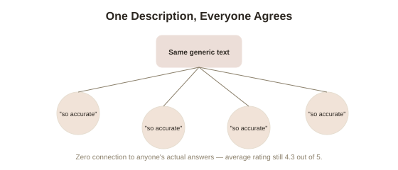

Chapter 5: The Forer Effect and Using Personality Data Responsibly
Chapter 1 opened by contrasting the Big Five's empirical, predictive validity against MBTI's popularity despite weak evidence. This closing chapter returns to that contrast directly, asking a more practical question: exactly why does a scientifically weaker instrument like MBTI feel so much more compelling and personally accurate than a scientifically stronger one — and what does responsible use of real personality data actually look like once you understand the answer?
The Forer effect: why vague, flattering descriptions feel uncannily accurate
Psychologist Bertram Forer ran a striking 1948 demonstration: he gave a personality test to his students, then handed each of them an identical, generic personality description — the same text for every single student, regardless of their actual answers — assembled from vague, broadly applicable statements pulled from a horoscope column ("you have a tendency to be critical of yourself," "you have found it unwise to be too frank in revealing yourself to others"). Asked to rate how accurately the description captured them personally, students rated it on average around 4.3 out of 5 — startlingly high, given that every student received the exact same text with zero connection to their actual answers. This is now called the Forer effect (or Barnum effect) (the tendency to rate vague, general personality descriptions as highly personally accurate, because such descriptions are deliberately or accidentally worded to apply to almost anyone), and it directly explains a large part of MBTI's, and horoscopes', persistent appeal: type descriptions are typically written broadly and flatteringly enough that most people reading their own type description find genuine, resonant-feeling detail in it, regardless of whether the categorization process that assigned them that type has any real predictive validity at all.
Why this makes validated instruments genuinely harder to sell, and more worth using
This creates a real, somewhat counterintuitive tension: the Forer effect means a scientifically weak instrument can feel more personally validating than a scientifically strong one, precisely because a rigorously validated instrument like the Big Five is designed to differentiate people accurately, including telling someone something less flattering or less resonant than they might hope to hear, rather than being optimized for universal, feel-good applicability. A properly validated Big Five profile that places someone at a genuinely low percentile on Conscientiousness, say, is doing its actual job — providing accurate, differentiating information — even though it may land less pleasantly than a vague MBTI description everyone can read something complimentary into. This is worth remembering directly: the discomfort of a specific, differentiating result is often a sign of genuine validity, not a flaw, while universal resonance is often a sign of exactly the opposite.

Responsible use in hiring: where the real ethical stakes are
Chapter 1 noted Big Five scores predict job performance about as well as a structured interview — a genuinely useful, validated tool for hiring decisions. But responsible use requires real care about exactly what that predictive power does and doesn't license. Conscientiousness's correlation with job performance, while real and replicated, is modest in absolute terms — enough to usefully inform a decision made alongside other information, nowhere near strong enough to justify treating a single personality score as a definitive gatekeeping criterion on its own. There's also a documented risk of adverse impact when personality assessments are used carelessly in hiring, and professional guidelines from organizational psychology bodies generally recommend using validated personality measures as one input among several, with a clear, demonstrated job-relevance for the specific traits being assessed, rather than as a blanket screening tool applied without regard to what the role actually requires.
What five chapters add up to, for using this material well
Bringing this topic to a close: the Big Five earned its place as this library's opening claim — a real, empirically grounded, more useful alternative to MBTI-style typing — and everything covered since has added necessary texture rather than undermining that original case. It changes over a lifetime in specific, measurable, partly deliberately-influenceable ways (Chapter 2). It may reasonably need a sixth dimension for some purposes (Chapter 3). Its structure, while robust across heavily-studied populations, isn't a confirmed human universal (Chapter 4). And its genuine predictive power comes with real limits on how confidently, and how singularly, any one score should be used to judge a real person in a real decision (this chapter). Used with that calibration — real, useful, evidence-backed, and bounded — trait psychology offers something meaningfully better than a horoscope dressed up in psychological language, precisely because it's willing to tell you something less universally flattering than a description built to make everyone feel personally seen.
Try this
Ideas for noticing or testing this in your own life.
- Read your own MBTI type description (or a horoscope) with the Forer effect in mind: notice how many of its statements are actually specific and falsifiable versus vague and universally applicable.
- If you've taken a validated Big Five assessment, revisit your least flattering or most surprising result — the discomfort of a specific, differentiating score is itself a small piece of evidence the instrument is doing its actual job.
Worth pulling on?
A few loose threads from this chapter — if any of these genuinely grab you, that's a good sign of where to go next.
- The Forer effect's power to make vague descriptions feel personally accurate connects to a much broader body of research on why certain claims feel compelling independent of their actual truth. → Already in the library: Cognitive Biases & Judgment covers related patterns in how confidence and accuracy come apart in judgment generally.
- Personality's predictive limits in hiring connect directly to broader questions about how much weight any single measured trait should carry in high-stakes decisions about real people. → Already in the library: Obedience, Conformity & Situational Power's chapter on research ethics covers a related caution about protecting real people in applied settings.